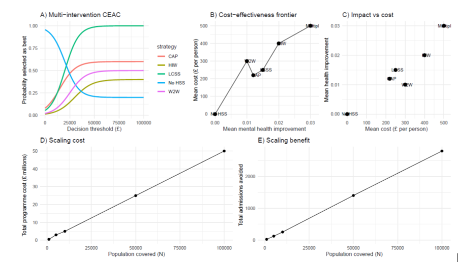

RESEARCH
Projects
Selected research projects in health economics, population health and health inequalities.
CHESS
CHESS is a research project led by the University of Liverpool examining how local support services affect health and wellbeing.
The study evaluates a range of Household Socio-economic Support Schemes including financial assistance, employment and training, housing and debt advice, housing retrofit, and psychological and social support.
My work focuses particularly on the economic evaluation of these interventions and methods for estimating health utility using linked electronic health records.

View project →LOCDAS
This NIHR-funded project aims to improve the health of people with drug and alcohol dependencies in Liverpool by delivering multi-speciality long-term condition clinics within community drug and alcohol treatment services.
The project examines healthcare utilisation, health outcomes, quality of life and costs to evaluate the effectiveness and cost-effectiveness of this model of care.
View project →High Intensity Users (HIU)
This project evaluates Cheshire East's proactive management of High Intensity Users through multidisciplinary support aimed at reducing unplanned hospital use.
Using linked healthcare data, we are assessing whether these schemes improve patient outcomes and reduce NHS healthcare utilisation and costs.
SHEER-L
SHEER-L (Spillover Health Effects in Electronic Records using Linked Data).
SHEER-L explores how linked electronic health record data can be used to measure spillover effects associated with household socio-economic support (HSS) interventions. The project examines whether these interventions are associated with improvements or adverse changes in wellbeing and mental health across household members, and how such wider effects might be incorporated into economic evaluation.
Health Utility Mapping
Mapping health status and Health utilities in EHR
This work explores the development of mapping algorithms to estimate health status and health utility values from routinely collected electronic health record (EHR) data. The work addresses a key limitation of EHR data: while they contain detailed information on healthcare utilisation, diagnoses, and service use, they often lack direct measures of health status or preference-based quality of life. The project therefore investigates whether routinely available EHR indicators can be used to predict health utility values for use in economic evaluation.